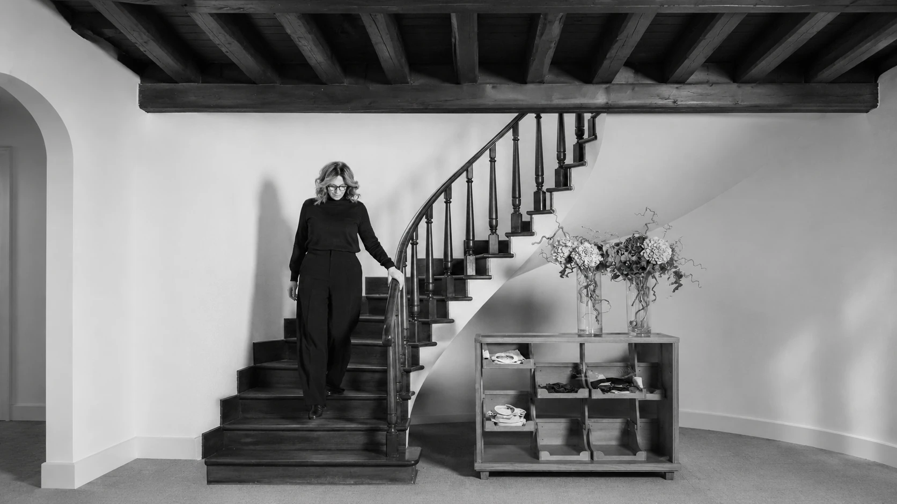
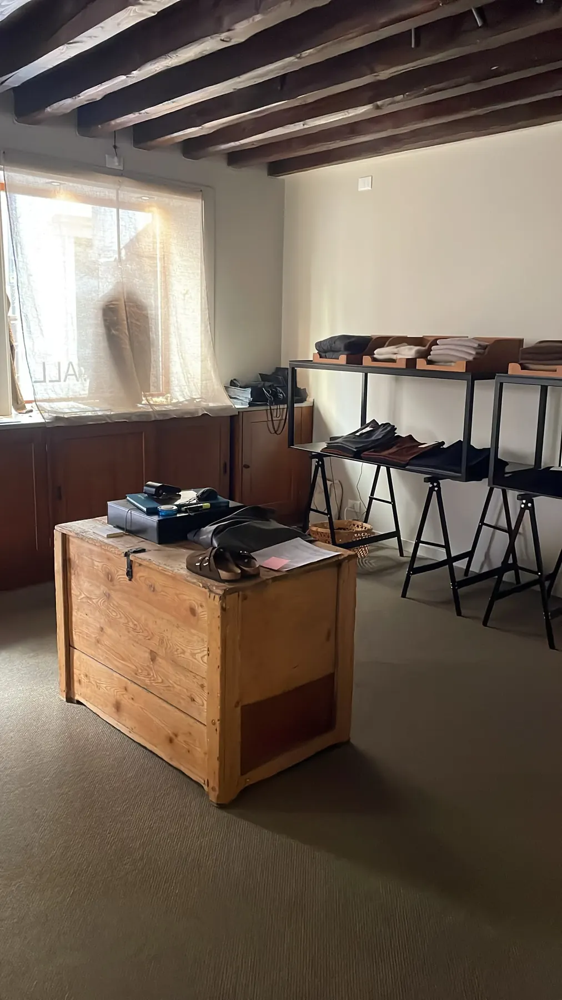
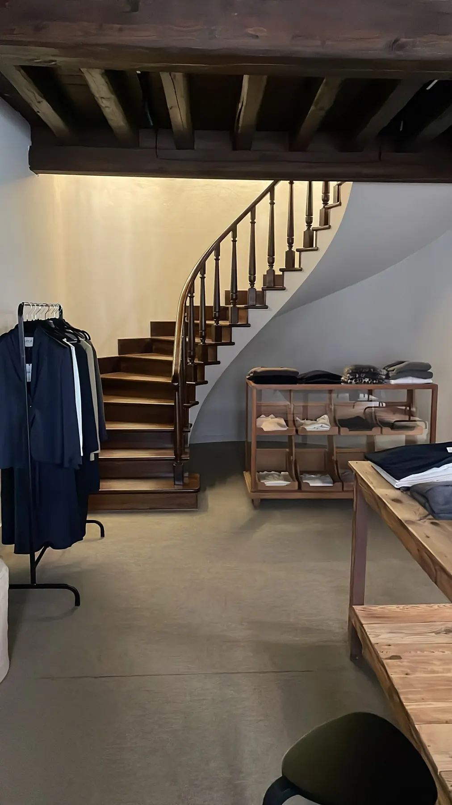
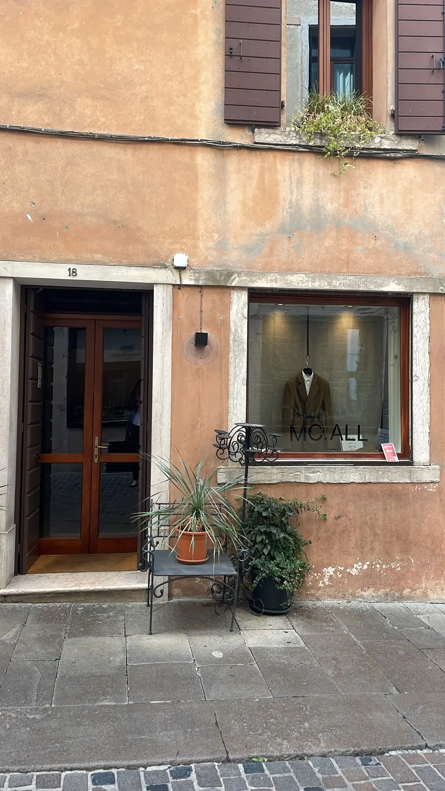

La sala del tavolo, MC.ALL
Il valore dei capi
Rendere più comprensibile il valore dei capi, raccontando selezione, materiali, vestibilità e durata.

01 · L'analisi
Prima di definire una direzione creativa abbiamo analizzato il racconto di Monica, le informazioni pubbliche di MC.ALL, il contesto della boutique a Bassano del Grappa, la presenza digitale e le fotografie dello spazio.
L'obiettivo era capire come rendere più leggibili, prima della visita, il valore della selezione, la competenza di Monica e l'esperienza che il negozio può offrire.
Analisi a cura di Luca Bottoni · MENA MEH! Future Lab · ottobre 2026
Cinque aree di opportunità01 — 05
La sala del tavolo, MC.ALL
Rendere più comprensibile il valore dei capi, raccontando selezione, materiali, vestibilità e durata.
Monica Crestan, MC.ALL
Dare maggiore visibilità a Monica e alla sua competenza, oggi più percepibili nella relazione diretta che nella comunicazione.
La vetrina di via Menarola
Allineare luce, vetrine ed esposizione alla cura e alla qualità che MC.ALL vuole esprimere.
Stender e specchio, MC.ALL
Rendere più chiari lo stile della selezione, i marchi e il servizio offerto.
Via Menarola 18, Bassano del Grappa
Facilitare la scoperta digitale del negozio e orientare chi desidera conoscerlo prima di entrare.
Dall'analisi alla direzione
Da qui nasce la direzione: rendere visibili la persona che seleziona, la selezione e l'esperienza del salotto.
02 · La visione
Dentro ci sono uno spazio curato e una persona che conosce ogni capo. Fuori, in vetrina e sui social, questo sguardo arriva ancora a frammenti.
La proposta è fare in modo che chi passa in via Menarola, o scorre il profilo, intuisca subito che ogni capo è lì per una ragione, e che quella ragione ha un nome.
Far percepire la mano che sceglie: pochi pezzi, accostati con intenzione.
Luce, inquadrature e toni che ritornano, dalla vetrina al feed.
Materia, costruzione e vestibilità: ciò che oggi si scopre solo provando.
Il passaggio
03 · Il ruolo di Monica
Monica ha seguito per oltre trent'anni le collezioni dalla prima intuizione al capo finito, negli uffici stile e prodotto. Per questo sceglie con gli occhi di chi i capi li ha disegnati.
Nel progetto diventa la garanzia della selezione e la guida nella scelta: chi spiega un tessuto, chi riconosce una vestibilità, chi compone un look intorno alla persona che ha davanti.
«Non cerco semplicemente il lusso. Cerco contenuto, qualità, ricerca e originalità.»
Monica Crestan
Accanto alle clienti
Un look quotidiano, una cerimonia, una serata a teatro, un aperitivo, il desiderio di una maglieria speciale: Monica accompagna ogni scelta con la sua conoscenza del prodotto. È la parte del lavoro che oggi si vede meno, e quella che Monica indica come la ragione per cui le clienti tornano.
La selezione di questa stagione
Fonti: testo «MC.ALL – Il mondo di Monica» scritto da Monica Crestan; report della call di Luca Bottoni (9 ottobre 2026).
04 · Moodboard
Ogni immagine ha un ruolo preciso nella direzione. Sono reference esterne, raccolte da Pinterest e Instagram, e alcune sono dichiaratamente generate o modificate con l'intelligenza artificiale: non sono fotografie di MC.ALL né capi in vendita.
I · Il salotto d'arte
Ritratti in interni, tra quadri, poltrone e libri. È il tono del salotto: una donna a suo agio tra le cose che ha scelto.
II · Luce e gesto
Luce cinematografica e corpi in movimento: la base visiva di «In movimento».
III · Accenti surreali
Giallo e rosso come accenti, oggetti fuori scala, presenze inattese. Da usare con misura: il capo deve restare leggibile.
IV · Vetrine e cornici
Il capo isolato e incorniciato, con un oggetto o una parola accanto. Le reference per facciata e vetrine sono nel capitolo sulla boutique.
05 · Il codice visivo
Una base editoriale e indossabile, in cui il capo resta sempre leggibile. Sopra, pochi momenti poetici e inattesi: quattro immagini su cinque raccontano il capo, la quinta lo fa ricordare.
Luce calda e radente, ombre che disegnano. È il primo gesto di selezione: ciò che è illuminato è stato scelto.
Corpi colti mentre camminano, si voltano, sistemano un bavero. Il movimento mostra come cade un tessuto.
Rovesci, cuciture, orli, etichette. Il dettaglio è la prova di una competenza.
Il salotto come set: una persona in un interno, tra quadri, poltrone e libri. Mai un capo sospeso nel vuoto.
Lana, maglia, legno, carta. Superfici calde e grane visibili: toccare con gli occhi.
Un solo elemento fuori posto accanto a un capo che resta protagonista. Un accento, mai la regola.
La lezione di Degas
Il dietro le quinte, il corpo che si prepara, l'inquadratura che taglia una figura a metà. Da Degas prendiamo lo sguardo che osserva senza mettere in posa.
06 · La boutique, salotto d'arte
Travi a vista, la scala a chiocciola, i tavoli di legno, la luce che entra dalle vetrine: lo spazio di via Menarola ha già il calore di una casa. La direzione è conservarlo, dargli una regia e creare al suo centro un vero salotto: il luogo in cui fermarsi davanti a un outfit come davanti a un'opera.
La proposta centrale
In una galleria ci si siede davanti a un'opera e la si guarda con calma. Da MC.ALL l'opera è un outfit, composto da Monica.
Lo spazio ha già il calore di una casa, ma manca il luogo in cui fermarsi. La proposta è creare un angolo salotto nel punto in cui oggi si trova la cassapanca, che può trovare posto in un altro angolo dello store. Due sedute, un tavolino, una luce dedicata e, di fronte, il look scelto da Monica presentato come un quadro: il salotto d'arte smette di essere un'immagine e diventa un luogo reale.
Posizione, misure e arredi sono da definire insieme a Monica e da verificare nello spazio reale.

L'outfit di Monica, come un'opera Il salotto: due sedute, un tavolino, una luce La cassapanca trova un altro postoDal moodboard
La sala del tavolo

La scala
Stender e specchio
Dove nasce il salotto
Tra un capo e l'altro, l'arte
Come in una galleria, i capi possono alternarsi a piccoli quadri, statuette, pezzi d'arte.
Una fotografia incorniciata sopra uno stender, una piccola scultura accanto a una maglia piegata, un oggetto trovato da Monica in viaggio. L'arte non decora: dà ritmo all'esposizione, crea pause tra un look e l'altro e ricorda che ogni capo è stato scelto, come si sceglie un'opera.
Le vetrine
La vetrina diventa un quadro: un capo speciale, una luce dedicata e una breve nota firmata da Monica che dica perché è lì. Lo stesso capo, la stessa scena, ritornano sui canali social.
La facciata · ipotesi creativa
Dalla strada, un elemento luminoso e scultoreo accompagna lo sguardo verso la vetrina e accende il capo scelto da Monica. Dietro il vetro, al posto della tenda di lino, un quadro: una cornice che trasforma il capo in un'opera da guardare. In vetrina il capo può anche alternarsi a piccoli quadri, statuette, pezzi d'arte, come in una galleria. Chi passa in via Menarola non vede un negozio, vede una finestra sull'arte.
Davanti all'ingresso, al posto della pianta, un elemento che di solito lì non c'è: una scultura, una piantana luminosa, un oggetto che crea spaesamento e ferma chi passa. È il tocco surreale della direzione, misurato e riconoscibile.
Il muro color intonaco, la pietra e i serramenti in legno restano come sono: la luce e la cornice aggiungono un segno, non cambiano la casa.
Gli interventi su facciata, vetrine e arredi sono una direzione da approfondire con Monica e da verificare per fattibilità, sicurezza e regole del luogo. Non costituiscono un progetto esecutivo.

Una luce sul capo Un quadro al posto della tenda di lino Al posto della pianta: una scultura luminosa, un elemento fuori postoSpunti per la facciata
07 · I contenuti
Ogni rubrica ha un compito: mostrare un capo, spiegarlo, farlo muovere, viverlo insieme, incorniciarlo. Alternate, tengono insieme prodotto, atmosfera e relazione.
Cinque rubriche01 — 05
La vetrina di via Menarola, MC.ALL
Un pezzo scelto, isolato nella luce, e il motivo per cui è entrato in boutique, raccontato in poche righe firmate da Monica.
Reference · il gesto della sartoria
Materiali, dettagli, costruzione e vestibilità, spiegati da chi li conosce dall'interno: il rovescio di una giacca, il peso di una maglia, come cade un pantalone. E un consiglio su come portarli.
Reference · Edgar Degas
Gesti non posati, ispirati a Degas: camminare, voltarsi, sistemare un bavero, salire la scala. Il capo resta sempre leggibile.
La sala del tavolo, MC.ALL
Lo styling, la prova, il dialogo con le clienti: il servizio che oggi si scopre solo entrando. Sempre con il consenso di chi viene ripreso.
Via Menarola 18, Bassano del Grappa
Il capo in vetrina, raccontato anche online: chi passa in via Menarola e chi scorre il profilo vede la stessa scena, con la stessa luce.
08 · Reference social
Pochi esempi, scelti per spiegare i format: non da copiare, ma da tradurre nel linguaggio di MC.ALL. Ogni link apre il contenuto originale in una nuova scheda; l'anteprima usa l'embed ufficiale di Instagram e si carica solo su richiesta.
Link verificati il 15 ottobre 2026 tramite le pagine pubbliche di Instagram.
Punto di partenza
Il profilo esiste e ha già un tono: la direzione parte da qui, non da zero.
Profilo della boutique, con indirizzo di via Menarola e contatto telefonico in bio.
Il testo di presentazione della boutique, che parla di ricerca, femminilità, tessuti da toccare e capi da scoprire.
Un post dedicato a Hache, che descrive la palette della stagione e il mix di colori e filati.
Rubrica 01
Il prodotto da solo, ma con una ragione.
La presentazione della linea denim per l'autunno 2026: capi isolati, nomi dei modelli, poche parole.
Un piccolo still life di fermagli per capelli su un tavolo di legno, con un breve dialogo ironico in sovrimpressione.
Rubrica 02
La competenza come contenuto.
Un incontro con una denim expert e designer, che racconta i nuovi modelli della stagione.
Il racconto in prima persona di una serie di t-shirt fatte a mano: base, taglio, stampa, finiture.
Rubrica 03
Abiti indossati, non esposti.
Momenti quotidiani senza programma, girati in un interno domestico.
Le ballerine colte mentre si preparano, fuori dalla scena: le due opere sono nel moodboard e nel codice visivo.
Rubrica 04
La relazione al centro.
Lo shopping raccontato come un'esperienza condivisa, in compagnia.
Una giornata a Milano con una curatrice di design, tra i luoghi che frequenta e il suo nuovo studio, vestita con una sua selezione di capi.
Rubrica 05
La vetrina come prima inquadratura.
Strati leggeri della collezione di agosto, in un reel che parte dalla facciata e dalle vetrine del negozio.
Una figura in abito rosso ricamato, con elementi surreali e trucco teatrale, contro un cielo pieno.
Tutti i link si aprono in una nuova scheda. I contenuti appartengono ai rispettivi autori e sono citati solo come ispirazione.
09 · In sintesi
Il prossimo passo
Monica, questa è la nostra prima lettura del tuo mondo. Adesso vorrei ascoltarti.
Dimmi cosa ti somiglia, cosa senti lontano, cosa cambieresti. Non c'è niente di definitivo: è una base da cui partire, e voglio costruirla con te.
Sabrina Viva
Creative director, MENA MEH!
Le domande che vorrei farti